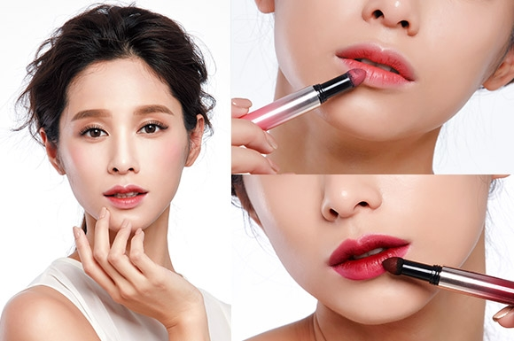

基礎保養

酒紅唇妝教學， 粉紫色眼影製造慵懶迷濛眼神
20
6
今年的眼妝要有點無辜慵懶、顏色清淡卻要有神，這其中的訣竅就在下眼瞼！跟著紅衣女孩的韓妞的酒紅唇妝教學，學習如何掌握清淡眼妝、重口味唇妝的絕妙平衡…more
2016/05/31
by 紅衣女孩
利用腮紅畫出「臉變小」的視覺效果
18
9
自拍都要仰角45度創造小臉效果的妳，除了運用修容產品，透過深淺光影的彩妝技巧，實現立體輪廓鵝蛋臉，其實腮紅也是妳臉變小的好物！…more
2016/05/31
by 白衣女孩
打造大師級眉彩 解碼最IN眉妝技法
30
5
法式完美妝容的成功關鍵就是眉，沒有厲害的妝技巧不打緊，往右滑看更多，掌握眉彩趨勢，你也可以輕鬆成為視覺焦點。...more
2016/05/28
by 綠衣女孩
教妳高低眉、眉色太深、眉毛太粗要怎麼畫？
21
8
畫出符合自己臉型的自然眉型真的是一門學問，有了適合自己的眉型，不僅可以修飾臉型還能凸顯五官，然而，每個人的眉型都不一樣，高低眉、眉色太深、眉毛太粗...more
2016/05/31
by 紫衣女孩
畫的不是妝，是氣色！韓星「自然乾淨」妝技巧
25
9
韓劇女星吹彈可破、毫無瑕疵宛如素顏的臉蛋，可不是真的沒化妝，而是隱藏許多彩妝心機和技巧。與大家分享如何「把化妝變成提升臉部好氣色」的訣竅…more
2016/05/20
by 黃衣女孩
COCO精粹釉色唇筆，展現不同的時尚態度!
15
3
現代人生活步調緊湊，到底要怎麼做才能隨時都保有女人的優雅與性感? 其實除了色彩上的選擇，不同的質地也會帶來不同的妝效，這次要和大家分享我的兩個心頭好...more
2016/05/31
by 黑衣女孩
熱門文章

